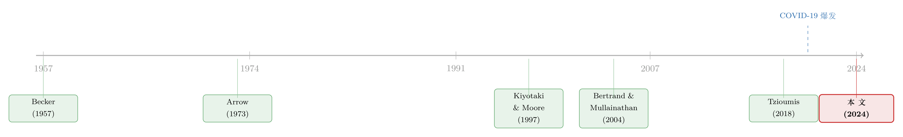

讨好你的人，凭什么先被欠款？——藏在付款顺序里的歧视
本文读的是 Costello, Minnis & Rabinovich (2024, Journal of Financial Economics)：当 COVID-19 这样的宏观冲击袭来、客户不得不挑选「先付谁、后欠谁」时，那些信用主管是女性或黑人的供应商，被拖欠的比例比非少数族裔供应商高出 10%–20%；而且这笔「迟付的账」最集中地流向「有偏见的客户 → 少数族裔供应商」这一组配对。一句话：歧视不只发生在招聘和定价里，它还藏在「谁的发票先被付」这个最不起眼的决定里。
1 一个被忽略的角落
关于歧视，我们已经听过很多故事了。女性每挣一美元，男性的同行能挣到一美元三分；黑人每挣七毛六，白人能挣到一块。经济学家也早就告诉我们：这种差距会拖累整体经济增长（Hsieh et al., 2019）。于是过去几十年里，研究者把目光投向招聘、薪酬、晋升——这些都是「选择」的环节：要不要录用你、给你开多少工资、要不要提拔你。
但有一个角落几乎没人去看：付款。
想象这样一个场景。一家供应商把货发出去了，给了客户三十天账期——这就是 商业信用 (trade credit)。三十天后，客户手头紧，账上的钱只够还一部分供应商。它会先还谁、后欠谁？这是一个纯粹的「事后」决定：交易早就做完了，合同早就签了，供应商是谁也早就定了。如果说招聘里的歧视还能用「信息不对称、不了解候选人」来解释，那么在一段已经做了十几年生意的老关系里，歧视照理说早该被过滤干净了——本文样本里供应商和客户的平均「关系年龄」高达 12.5 年。
这正是本文最迷人的地方：它问的不是「歧视存不存在」，而是「在一段长期、相互了解、几乎不存在信息不对称的关系里，偏见还能不能左右一个真金白银的决定」。
接着，一个自然的问题是：就算客户心里有偏见，市场难道不会惩罚它吗？
2 Becker 的老问题：市场为什么没把歧视「竞争掉」
这要从一桩经济学的老公案说起。Becker (1957) 和 Arrow (1973) 早就指出：在完全竞争的市场里，歧视是活不下去的。一个有偏见的雇主只肯雇白人、不肯雇更便宜的黑人，那么一个没有偏见的竞争对手就能用更低的成本雇到同样的劳动力、赚更多的钱，最终把有偏见的雇主挤出市场。同样的逻辑搬到供应链上：如果一个客户故意拖欠某个供应商，市场化的惩罚（比如供应商断供、停止赊账）就应该让它付出代价。
所以——要在数据里看见歧视，你恰恰需要一个市场惩罚机制失灵的时刻。
然后，本文真正关键的一步出现了：作者找到了这样一个时刻——2020 年 3 月，COVID-19 的骤然降临。
为什么是它？因为这场冲击同时拧松了两根弦：
- 一根是客户这边的「流动性」弦。 这是一次全经济体范围的巨震。2020 年前 11 周，经季节调整的初次失业申请每周还只是两百万出头的零头（约 20 万），到第 12 周直接跳到 300 万；到 4 月底，持续领取失业救济的人数超过 2200 万；亚特兰大联储对二季度 GDP 的共识预测是年化下跌 35%。客户被迫做「先付谁」的取舍——这正是偏见可以钻进来的缝隙。
- 另一根是供应商这边的「惩罚」弦。 疫情让需求骤降、信息混乱，供应商既看不清哪个客户是真的还不起、哪个是趁火打劫，也因为自己也愁着卖不出货而不敢轻易断供。换句话说，被歧视的一方惩罚不动歧视它的人了。
两根弦一起松，歧视才有了显形的舞台。
3 识别策略：一条「全是固定效应」的窄路
数据来自一个第三方信用聚合平台的专有数据库：供应商每月必须上传与每一个客户的全部交易，里面有逾期应收账款 (overdue accounts receivable)，按 30 天一档分桶，还有买卖双方的身份。样本期是 2019 年 10 月 到 2020 年 5 月——一个卡在疫情爆发点两侧的窄窗口。剔除保理等金融类供应商后，样本覆盖 32 个两位数 SIC 行业，从夫妻店一路到《财富》500 强。
谁是「少数族裔供应商」？关键在于一个别人没有的变量：供应商的首席信用主管 (lead credit officer)。这个人负责审批赊销、盯着客户的信用额度、并且亲自打电话或发邮件去催款——他/她就是客户付款时打交道的那张「脸」。如果歧视真的影响付款，那么它的靶子，多半就是这个人。作者沿用 Tzioumis (2018) 的方法，用名字去匹配人口统计特征：性别用 Genderize.io，种族用 Python 的 ethnicolr 包（基于美国人口普查、佛州选民登记和维基百科数据）。女性或黑人 即被归为少数族裔。
用名字猜性别和种族当然有噪音。但作者的论证很干净：这种误分类是随机的，只会让处理组和对照组的差异被「稀释」，从而让真实效应更难被估计到。换句话说，噪音是在跟作者作对——如果在这种逆风里还能找到显著的歧视，那效应本身只会更强，而不是更弱。
基准的 双重差分 (difference-in-differences, DiD) 设定，是比较疫情前后、少数族裔供应商相对非少数族裔供应商的逾期变化：
$$ y_{ijt} = \beta\,(\text{Minority}_j \times \text{Post}_t) + \text{Controls}_{ijt} + \varepsilon_{ijt} $$
这里 \(i\) 是客户、\(j\) 是供应商、\(t\) 是月份，\(y_{ijt}\) 是该笔关系上的逾期金额。但这个基准设定有个老毛病：少数族裔供应商会不会本来就更脆弱、更集中在受疫情冲击大的行业（餐饮、零售）？会不会因为育儿压力更大而催款不力？如果是这些「经济基本面」的差异在驱动结果，那就不是歧视，而是混淆。
于是真正关键的一步在于本文的「关系内估计量 (within-relationship estimator)」。数据的妙处在于它的网络结构：同一个月里，每个供应商对接多个客户，每个客户也向多个供应商进货。这就允许作者把三组固定效应一次性塞进去：
把这三层固定效应都吸走之后，唯一剩下的变异，就是「一段特定买卖关系内部、付款行为随时间的变化」。供应商是不是更脆弱？被 \(\gamma_{jt}\) 吸走了。客户自己是不是快垮了？被 \(\alpha_{it}\) 吸走了。这段关系本来亲不亲？被 \(\delta_{ij}\) 吸走了。于是那些「经济基本面」的故事——少数族裔供应商更集中在受灾行业、更难抽出精力催款、更容易被配给某类客户——被一层层剥掉。
4 主要结果：迟付的账，专挑「偏见 × 少数族裔」流
基准结果先给了一个干净的数字：拥有少数族裔首席信用主管的供应商，在疫情爆发后逾期应收账款的增幅，比非少数族裔供应商高出 10%–20%。Fig. 1 里那条「少数族裔供应商被拖欠金额」的曲线，在 2020 年 3 月之后明显地从对照组上方岔了出去。
然后是真正的反转。光知道「少数族裔供应商被欠得更多」还不够——作者还想知道，钱是从哪种客户那里被扣下来的。于是他们需要一把尺子来量「客户有多大概率带着偏见」。这把尺子由客户所在地的五个代理变量构成（注意：是地点层面，不是个人，避免了内生地挑人的嫌疑）：
- 该县在
1877–1950年间是否种族私刑（lynching）高发； - 是否属于「日落镇 (Sundown Town)」——历史上立法或立规把黑人挡在社区之外的城镇；
- 当地居民的「普世主义 (universalist)」态度（对陌生人是否一视同仁的调查）；
- 对女性的内隐偏见（Implicit Attitude Test）；
- 是否位于性别工资差距大的州。
作者用 主成分分析 (principal component analysis, PCA) 把它们压成三个指标：总体偏见、性别偏见、种族偏见。结果与假说严丝合缝：迟付增幅最大的，正是「偏见客户 → 少数族裔供应商」这一组配对。也就是说，把所有经济基本面都控制住之后，剩下的那点变异，恰恰落在偏见理论预测它该落的地方。
作者也诚实地承认这条路不是「子弹打不穿」的。一个挥之不去的担忧是：会不会「偏见客户—少数族裔供应商」这种配对，恰好是那些对客户最不重要的关系？疫情一来，客户本就会先砍掉无关紧要的小供应商。为此他们控制了关系重要性的多重代理——合作年限、疫情前的交易额、买卖双方的地理距离。确实，最不重要的关系被拖欠得更厉害；但控制住这些之后，核心结论依然成立。
5 最后一块拼图：当惩罚消失，歧视就回来了
如果歧视的舞台是「惩罚机制失灵」，那就该能直接验证：惩罚到底有没有失灵？
作者去看「客户被炒 (firing)」——供应商在客户违约后会不会终止关系。这是一个漂亮的对照：
- 疫情前：违约的客户，在违约后的六个月里，被供应商「炒掉」的概率显著高于按时付款的客户。市场惩罚是真实存在、有牙齿的。
- 疫情中：违约客户不再比别人更容易被炒。供应商自顾不暇，惩罚的牙齿松了。
这正好闭合了整个逻辑链条：不是疫情本身「制造」了歧视，而是疫情拆掉了约束歧视的那道市场闸门。市场状况通过改变「被歧视者还击的能力」，间接地放大了歧视行为——这恰恰是 Becker (1957) 和 Arrow (1973) 理论的一个实证注脚。
6 文献脉络
把这篇论文放回它的坐标系，能看得更清楚。
最上游是歧视理论：Becker (1957) 的「品味型歧视 (taste-based discrimination)」和 Arrow (1973) 奠定了基调——完全竞争会把歧视竞争掉，所以要看见歧视，必须先有市场失灵。接着，实证文献长期聚焦在「选择」环节，且大多是高信息不对称的场景：Bertrand & Mullainathan (2004) 那篇著名的「简历实验」、Fisman et al. (2017) 的研究，都在问「在不了解对方时，偏见如何左右选择」。
另一条线是商业信用与供应链金融：商业信用支撑了高达九成的企业间交易（Auboin, 2009），是企业重要的融资来源（Demirguc-Kunt & Maksimovic, 2001）；而流动性冲击会顺着这张网络传染（Kiyotaki & Moore, 1997；Jacobson & von Schedvin, 2015）。过去这条线大多在问「供应商为什么愿意放账」，很少有人问「客户愿不愿意还」。

本文站在两条线的交汇处：它把「歧视」搬进「商业信用付款」这个全新的、信息高度对称的、长期关系的场景，第一次回答了「偏见能否在选择之后长期存续、并在信用事件中左右真金白银」。从方法上，它借了 Tzioumis (2018) 的名字识别术，又靠数据的网络结构开出「关系内估计量」这条新路。
国内读者对「歧视如何塑造信贷可得性」如果感兴趣，本博客此前评述过两篇邻近的工作：一篇讲黑人小企业在疫情救助贷款中如何被银行拒之门外、只能绕道金融科技（见《银行不肯放的款，黑人餐馆只能去金融科技公司「绕路」》），另一篇则从金融科技放贷里量出了「文化偏见」的真实代价（见《替自己人放贷，为什么反而亏了钱？》）。本文的独特之处，在于它把镜头从「能不能借到钱」挪到了「借出去的钱能不能按时收回」。
7 评论与延伸（Q&A + 研究方向）
(a) 几个可能的疑问
Q：用名字猜出来的种族和性别，噪音那么大，结论还可信吗？
关键在于误分类的方向。如果分组噪音是随机的，它只会把处理组和对照组「搅匀」，使真实差异被稀释、效应被低估。所以在这种逆风下仍能识别出
10%–20%的差异，反而说明真实效应只会更强。当然，若名字识别存在系统性偏差（比如某些行业的少数族裔名字更难识别），那才会构成威胁，这一点值得读者留心。
Q：为什么非要用 COVID？换个冲击行不行？
理论上可以——作者自己也提到 2008–2009 年的大衰退是个备选。COVID 之所以理想，是因为它同时满足两个条件：既是足够大的全经济体流动性冲击（逼客户做取舍），又同时削弱了供应商的惩罚能力（两根弦一起松）。可惜作者的数据（尤其是信用主管的身份）覆盖不到金融危机时期，所以 COVID 是现实可得的最佳实验场。
Q：这跟「统计型歧视」分得开吗？会不会客户只是理性地认为少数族裔供应商更可能倒闭、所以先欠它？
这正是「关系内估计量」要回答的。统计型歧视的逻辑建立在「基本面差异」上——而供应商×月固定效应已经把「这家供应商是不是真的更脆弱」整体吸走了。剩下的变异落在「偏见客户 × 少数族裔供应商」这一格里，更难用纯粹的理性推断来解释。话虽如此，要在数据里彻底分清「品味型」与「统计型」始终是这类研究的难点，本文做到的是把后者大幅压缩，而非完全排除。
Q：长期关系不是应该「过滤」掉偏见吗？结果是不是反直觉？
是的，而这恰恰是论文最有意思的贡献。直觉上，做了十几年生意、彼此知根知底，偏见早该被磨平。本文却显示：一旦市场惩罚机制失灵，偏见会从长期关系的缝隙里重新冒出来。这说明偏见的「存续性」比我们想象的更顽固。
Q：「10%–20% 的更大增幅」——是相对什么的 10%–20%？
是相对于非少数族裔供应商逾期账款增量的相对差异，而非绝对水平差 10–20 个百分点。它衡量的是疫情冲击下两组供应商被拖欠速度的差距，DiD 捕捉的是「变化的变化」。
Q：会不会是少数族裔信用主管自己在疫情里催款更松懈，而非客户在歧视？
这个故事会被客户×月和关系固定效应削弱，但不能说完全排除。作者的辩护是：催款努力的下降属于供应商侧的时变特征，而「偏见客户 → 少数族裔供应商」这一格的额外效应，很难用供应商单方面的努力变化来解释——除非少数族裔主管恰好对偏见客户更松懈，这在逻辑上说不通。
(b) 几个可能的研究问题与提案
1. 把场景搬到公司债 / 信用市场：评级分析师或承销团队的人口统计特征，是否影响发行人被对待的方式？
【经济故事】债券市场同样存在「人」的环节——评级分析师、承销商的销售团队。当市场遇冷（如 2020 年 3 月或 2022 年加息冲击），是否有某类发行人被系统性地多要了利差，而这与对接他们的分析师/承销人的身份相关？ 【可行性】中。挑战在于发行人侧的对接人身份往往不公开；可行的折中是用承销商的团队构成 + 发行人所在地的偏见代理做交互。数据可拼 Mergent FISD + 团队名单，识别可借鉴本文的「冲击 × 偏见地点」三重差分。
2. 外资持有人 vs. 本土持有人：宏观冲击下，谁先抛售「少数族裔高管」公司的债券？
【经济故事】本文讲的是付款顺序的歧视，类比到投资组合调整：当流动性收紧、机构被迫「卖点什么」时，是否会先卖掉那些 CEO 或 IR 主管是少数族裔的公司？外资持有人因信息劣势，可能更依赖「软偏好」。 【可行性】中。需要 eMAXX / Morningstar 的债券持有人面板 + 高管人口统计。识别可用基金赎回冲击作为外生的「卖压」来源，看抛售是否在少数族裔高管的标的上更集中。
3. 商业信用网络里的「偏见传染」：被偏见客户拖欠的供应商，会不会把压力转嫁给自己更下游的少数族裔供应商？
【经济故事】Kiyotaki & Moore (1997) 式的流动性传染遇上偏见，可能产生「歧视的级联」——A 歧视性地欠了 B，B 在自身流动性受压时，会不会也歧视性地欠了 C？ 【可行性】低到中。需要多级供应链的逐笔交易数据（本文那种专有数据库），公开数据几乎做不到。但若能拿到，识别策略可沿用本文的网络固定效应结构，做「冲击沿链条传播」的事件研究。
4. 惩罚能力的连续度量：用行业层面的「供应商可替代性」检验歧视强度。
【经济故事】本文用「炒客户」证明了惩罚机制在疫情中失灵。更进一步：在那些供应商更容易被替换的行业（客户议价力强），歧视是否本就更普遍、且在冲击中放大得更厉害？ 【可行性】高。行业集中度（HHI）、投入产出表里的可替代性都是公开可得的。可把它作为本文 DiD 的交叉项，检验「惩罚能力越弱、歧视效应越强」这一可证伪的预测。
8 我的判断
这篇论文最大的贡献，是把「歧视」从招聘、薪酬、定价这些被研究透了的「选择」环节，推进到一个几乎无人涉足、却在经济上极其重要的角落——付款顺序。它的聪明之处全在数据结构上：正因为同一个月里供应商对多客户、客户对多供应商，作者才能用三层固定效应把「经济基本面」的混淆几乎榨干，逼出「关系内」那一点干净的变异。再加上「炒客户」这块验证惩罚机制的拼图，整个故事在逻辑上是自洽且优雅的。
我的担忧主要有两处。其一是测量：用名字推断种族和性别毕竟噪音不小，作者的「稀释只会低估」辩护在随机误分类下成立，但若误分类与行业、地区系统相关，结论的纯净度就要打折。其二是外部效度：样本来自单一专有平台、卡在一个独特的疫情窗口，「关系内估计量」识别出的是这个特定冲击下的局部效应，能否推广到常态时期、推广到其他类型的市场失灵，仍是开放问题。
接下来我最想看到的，是把这套「冲击 × 偏见地点 × 对接人身份」的识别框架，搬到信用市场里去——尤其是公司债的发行与持有环节。如果偏见真的能在一段十几年的老关系里、在最不起眼的付款决定上留下痕迹，那么在那些「人」的作用更隐蔽、市场惩罚更迟钝的角落，它很可能也在悄悄运转，只是还没有人拿着合适的数据去把它照亮。
参考文献
Arrow, K. (1973). The theory of discrimination. In Discrimination in Labor Markets 3(10), 3–33.
Auboin, M. (2009). Boosting the availability of trade finance in the current crisis. CEPR Policy Insight No. 35.
Becker, G. S. (1957). The Economics of Discrimination. University of Chicago Press.
Bertrand, M., & Mullainathan, S. (2004). Are Emily and Greg more employable than Lakisha and Jamal? A field experiment on labor market discrimination. American Economic Review 94(4), 991–1013.
Costello, A. M., Minnis, M., & Rabinovich, I. (2024). Discrimination in the payments chain. Journal of Financial Economics 158, 103872.
Demirguc-Kunt, A., & Maksimovic, V. (2001). Firms as financial intermediaries: Evidence from trade credit data. World Bank Policy Research Working Paper No. 2696.
Jacobson, T., & von Schedvin, E. (2015). Trade credit and the propagation of corporate failure: An empirical analysis. Econometrica 83(4), 1315–1371.
Kiyotaki, N., & Moore, J. (1997). Credit cycles. Journal of Political Economy 105(2), 211–248.
Love, I., Preve, L. A., & Sarria-Allende, V. (2007). Trade credit and bank credit: Evidence from recent financial crises. Journal of Financial Economics 83(2), 453–469.
Schwab, S. (1986). Is statistical discrimination efficient? American Economic Review 76(1), 228–234.
Tzioumis, K. (2018). Demographic aspects of first names. Scientific Data 5, 180025.